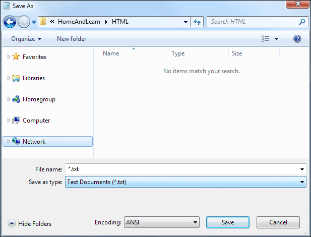
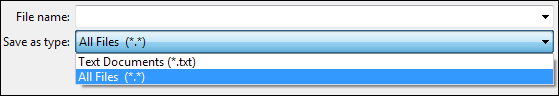
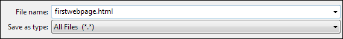

Saving Web Pages
To save your code as a web page, click the File menu at the top of Notepad (or whatever Text Editor you are using.) From the File menu, select Save As. The Save As dialogue box appears (We created a new folder to store all our web pages in, and called the folder HTML)..

Note the default extension at the bottom, under “Save as type” It says, Text Documents (*.txt). If you leave it on that then you won’t have web page, you’ll have a text file. Click on the drop down list and change it to “All files”. (You don't need to do this if you're using TextEdit on a Mac. Just type firstwebpage.html in the Save As box.)

In the File Name box, type firstwebpage.html

Note that we’ve used all lowercase letters. This is not strictly necessary, but is recommended. Also, try not to add spaces to web page names as this can cause problems. You can use underscores or hyphens, though. So these two are OK:
first_web_page.html
first-web-page.html
But these two should be avoided:
first web page.html
FirstWebPage.html
Click on Save and you’ll have a HTML page that can be displayed in a browser.
In the next lesson, you'll see how to view your web pages.